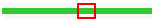

|
Using the Individual Map Controls
To facilitate flexible alignment of different maps to each other, and to allow search and browse functions for individual maps, we have added navigation tools for each map displayed.
There are five controls available for each map in the viewer:
- Scrolling with the Location Bar
- Scrolling with the Arrows
- Scrolling to a Specific Location
- Zoom
- Find
A sixth option is available for the sequence maps:
Scrolling with the Location Bar
To the left of each map is a location bar that represents the entire chromosome. A red rectangle on the bar indicates the area of the chromosome currently visible on the map: 
You can use this location bar to scroll the map view.
To scroll with the location bar
- Select a point on the chromosome location bar in the area you would like to view (outside of the red rectangle)
The window redisplays with the map showing the area you selected. The red rectangle on the bar indicates the location of the area shown.
Scrolling with the Arrows
Above each map, beside the location indicators, are scrolling arrows:
To scroll
The window redisplays with the map illustrating a segment of the chromosome left or right of and overlapping with the previous segment.
Note: The map viewer window always redisplays with the central controls at the top. You may have to scroll down in your browser window to view the map you want.
Scrolling to a Specific Location
If you know the base pair or centiMorgan location you're interested in, you can quickly access the location directly:
- Type in a location range in format shown beneath the box (i.e., no commas, use a single hyphen to separate the numbers in the range)
- Select Go
The window redisplays with the map illustrating the range you specified.
When you use this option, the zoom level adjusts to include the range you specified. Afterward, when you use search or other scrolling options, the zoom level will adjust to the nearest standard level (i.e., one of the levels listed in the zoom drop-down list).
Note: The map viewer window always redisplays with the central controls at the top. You may have to scroll down in your browser window to view the map you want.
Zoom
You can zoom in or out on a single map using the zoom level option or by using the Go option. The zoom level indicates the magnification of the display. At a zoom level of 1x, the entire chromosome appears. At a zoom level of 2x, 1/2 of the map is visible; at 4x, 1/4 is visible, etc. The current zoom level appears on the button:
The window redisplays with the map at the requested zoom level.
When you use Go to view a specific range in the map, the zoom level is customized and Custom appears in the zoom drop-down list. When you use other search or scroll options after this, the zoom is adjusted to the nearest standard level (i.e., a level that is listed in the drop-down list).
Note: The map viewer window always redisplays with the central controls at the top. You may have to scroll down in your browser window to view the map you want.
Find
You can search for a specific mappable element--a genetic marker, clone, gene, etc.--on an individual map using the Find option:
The window redisplays with the element you wanted highlighted on the map. If you highlighted name does not match the name you entered, the searched-for name is an alias. you can also use the wildcard character * to match any number of characters or ? to match a single character(e.g. *snp*, ap?, F2K*).
Note: The map viewer window always redisplays with the central controls at the top. You may have to scroll down in your browser window to view the map you want.
Clones with uncertain locations
Sequences that have no known relationship to markers do not appear in the physical map. You can view a list of these clones, however.
A window appears with a list of clones with uncertain locations in the chromosome:
| To report problems: curator@arabidopsis.org |
|